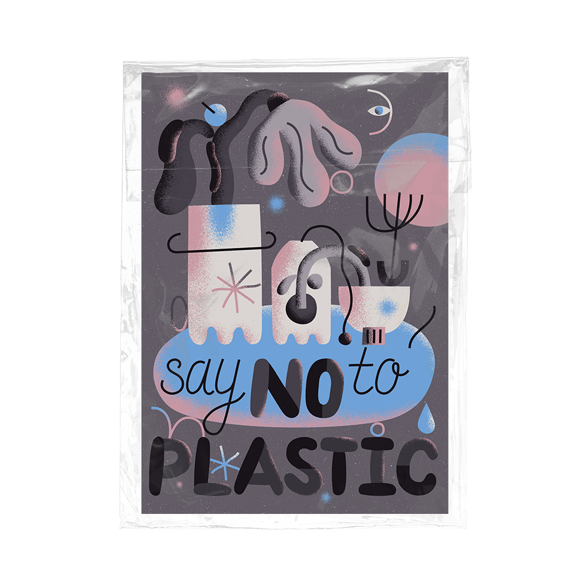

You’ve probably heard that in 2050 there will be more plastic in the oceans than fish.
If this is not scary enough, I don’t know what is (well, climate change, but those go hand in hand).
Producing plastic involves fossil fuels and leaves a giant carbon footprint. Plastic bottles followed by food wrappers, and cigarette butts are the top contributors to freshwater plastic pollution.
The thing about plastic is that only as little as 10–15% of it is being recycled globally right now. Single use plastic bottles can be recycled only once and some of them (non-transparent ones) are difficult, if not impossible, to reuse. Also, it takes them 450 years
to decompose.
As a result of not being recycled, plastic finds its way to landfills where it lives forever and to our rivers and oceans (8 million pieces every single day) where it poses a real threat to various marine life species, killing more than 1 million of them every year.
Here is a shocking video of birds found on the Lord Howe Island near Australia. Cause of their death? They were filled with plastic which perforated their gut.
and it’s not only plastic litter and marine debris that ends up in our oceans. Microplastics washed out from clothes made of synthetic fabrics such as viscose are consumed by fish and make their way back to our food chain. Result: we eat plastic. In fact, each of us eats 70,000 microplastics every year. (the potential risk on our health hasn’t been fully identified yet, but it doesn’t mean it’s not there).
If you’re even as half preoccupied
by this as I am,
read on.
So, what can you do
to help prevent this?
Recycle? No question about it! But most importantly — REDUCE plastic. Wanting to educate myself on ways to reduce plastic, I joined the #plasticfreejuly challenge. Day by day I faced new challenges and discovered yet another area of my life which needed a mindset change.

Am I making
a difference?
When you start reducing plastic, you start questioning choices of your everyday life and sometimes it may all seem too daunting or too small to matter. Questions such as: “Am I really making a difference?” can take you down a dangerous spiral of thoughts which may result in inertia: doing nothing.
Knowing that some of the biggest plastic polluting countries are China, US, Germany, Brasil, and that The East Asia and Pacific region dominates global mismanaged plastic waste (60%), I repeatedly asked myself: does it make a difference to drive change outside of those countries?
Does it make a difference to act single-handedly when this is a serious global challenge which needs to be addressed by country leaders and result in new policies?
I still think it does. Here’s why.
Changing even one habit already makes a difference and minimizes demand for certain products. Asking challenging questions to brands (often located in the polluting countries) and talking about this topic sparks conversation and awareness amongst people worldwide. It makes companies more transparent about their processes and supply chains as well as creates demand for new, eco-conscious and sustainable businesses forcing traditional brands to adapt.

Top challenges
when going
plastic-free
One of my takeaways from #plasticfreejuly challenge is that the switch is possible, but is definitely not easy. It requires extra planning, guts to refuse, asking many questions, and most importantly, new habit forming. This is not to discourage anyone, but rather help you go into it with the right mindset and ready to face some roadblocks ahead.